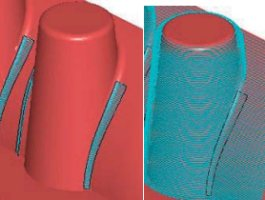

|
 Yeni
Versiyonhttp://www.vero-software.com/ms_v61.htm Yeni
Versiyonhttp://www.vero-software.com/ms_v61.htm
Machining STRATEGIST Sürüm 6.1 de islemede hýz ve esneklik
alanýndaki geliþmeler göze çarpýyor. Bu yeni geliþimleri tanýtýmýn
devamýnda görebilirsiniz.
Hesaplanmýþ
Operasyonlarda Sýnýr Deðiþtirebilme
Ýþlemler
penceresine 'Veriler' isimli yeni bir bölüm eklendi. Bu bölüm
size isleme esnasýnda belirtmiþ olduðunuz sýnýrlarý komutla
iliþkili olarak deðiþtirmenizi saðlýyor.
Örnek olarak, yapmýþ olduðunuz bir kaba iþleminde Veriler
penceresini açarak Constraint Boundaries bölümünden daha önce
oluþturmuþ olduðunuz sýnýrý seçerseniz, yeni takým yolu otomatik
olarak hesaplanacaktýr.
Bu
iþlemi CTRL butonuna basarak yaparsanýz takým yolu baðlama
ve kesme parametreleri ile elde edilmiþ post'unuz otomatik
olarak güncellenecektir. Bunlara ek olarak yine yeni bir komut,
bir sýnýrýnýzý yada yüzey modelinizi deðiþtirdiðinizde bunlarý
kullanmýþ olduðunuz iþlemlerde otomatik olarak güncellemenizi
saðlýyor. Office programlarýndaki 'Bul ve Deðiþtir iþlemine
benzeyen bu komutla kullanmýþ olduðunuz sýnýrlarý ve yüzey
gruplarýný yenileriyle bütün uyguladýðýnýz islemelerde güncelleyebilirsiniz.
Bu komutta da CTRL düðmesine basarak yaparsanýz takým yolu
baðlama ve kesme parametreleri ile elde edilmiþ post'unuz
otomatik olarak güncellenecektir.
Hýzlý
MSA yükleme
Machining
STRATEGIST simdi kendi uzantýsý olan MSA dosyalarýný daha
hýzlý yüklüyor, yüksek boyuttaki dosyalar daha hýzlý açýlabiliyor.
Dosya boyutuna baðlý olarak %75 ile %95 oranýnda fark görebilirsiniz.
Örnek olarak 400 MB bir MSA dosyanýn açýlýsý süresi %94 oranýnda
düþtü.
Ýslemede
Kullanýlan Noktalarýn Azaltýlmasý
Kaba
Ýþleme Pasolarý ve Yatay alan Pasolarý'nda isleme kalitesini
etkilemeksizin takým yolunda kullanýlan nokta sayýsý azaltýldý.
Bu kullanýlan yeni sistemle takým yolundaki nokta sayýsý %75
azaltýlabiliyor.
Bu
pasolarýn oluþturulmasýndaki hýz artýmý uygulamasý ayný zamanda
kayýt edilen dosyalarýn ebatlarýnýn ve çýkan post dosyasýnýn
azalmasýný saðlamakta. Bu ayný zamanda tezgâh üzerinde isleme
zamanýný azaltacak ve özellikle geniþ ebatlý post dosyalarýný
kullanmakta zorlanan eski makineler için faydalý olacaktýr.
Dalma
Korumalý Delik Delme
Kör
delikler için dalma kontrolüyle Machining STRATEGIST simdi
özel derinliklerde ve deliðin tabanýna kadar delik delme yapýyor.
Bu yeteneði sayesinde Machining
STRATEGIST seçilen delik grubu içinden takým çapýný kontrol
ederek takým çapýndan büyük deliklere girmiyor.
Nazari
Kalan Alan Sýnýrlarýnýn Eðim Açýlarýnýn Geliþimi
Bu
iþlem size nazari alan sýnýrlarýný dik ve sýð alanlarda da
kullanmanýza yardýmcý oluyor. Kullanýcý düþük ve yüksek açýlarda
kontrol yapabilecek.Bu kabiliyeti 3D takým yollarý ile iþleme
pasolarýna müdahale kabiliyeti ile birleþtirdiðinizde bu size
kalan dik alanlarý düzleç (waterline) pasolarýyla ve daralan
sýðlaþan kalan alanlarý da paralel (raster) yada paralel son
kalem pasolarý ile sabit adýmlý (constant stepover) pasolarla
iþlemenize izin vermektedir.
Ýþleme
Pasolarýna 3D sýnýrlar ile müdahale edebilme
Son sürüm ile isleme pasolarýna 3 Boyutlu sýnýrlar ile müdahale
etmeniz mümkün hale geldi. Bu iþlem var olan 2 Boyutlu sýnýrlar
ile müdahale gibi gerçekleþip, avantaj olarak dik duvarlarda
daha doðru sonuç almanýzý saðlýyor. Bu iþlemi bütün temizlik
operasyonlarýna herhangi bir 3 Boyutlu sýnýrla yapabilirsiniz.
(theoretical rest area, rest areas, shallow area, cutter contact
areas).
Yeni
Ýþleme Stratejileri; Kýlavuz
Eðrileri:
Machining
STRATEGIST artýk kýlavuz eðriler kullanarak aþaðý adýmlamayý
otomatik ayarlayabiliyor. Bu iþlem Kaba iþleme Pasolarýnda,
Düzleç Pasolarda ve Düzleç Kaba Ýþleme Pasolarýnda geçerlidir.
Kýlavuz eðriler kullanýlarak aþaðý adýmlamada pasolar arasýndaki
sýklýk bu eðriden referansla belirleniyor.
Tahmin
Edilen Ýþleme Süresi:
Tahmini
isleme süresi artýk kesme parametreleri sayfasýnda tek takým
yolu için görülebilecek.
Takým
Animasyonu:
Takým
yolu animasyonunu kesme parametreleri belirlendikten sonra
gerçekleþtirirseniz Machining STRATEGIST kesme hýzýný özgün
hýz olarak kullanacaktýr. Animasyon için özgün deðer kesme
parametreleri olmaksýzýn 4000'dir. Ýþleme operasyonu tamamlanmamýþsa
süre olarak sýfýr gözükecektir.
VISI
STL:
Machining
STRATEGIST artýk birleþtirilmiþ STL dosyalarý ve VISI SERIES
dosyalarýný direk açabiliyor.
Sýnýr
Özellikleri: Sýnýr Düzenleyicisinde de, sýnýrdaki yay
geometrileri üzerine Shift ile beraber Farenizin sol tuþuyla
iþaretlerseniz düz çizgiler haline getirebilirsiniz. Artýk
dikdörtgen geometrilerde köselere otomatik kavis atabiliyoruz.
Yazýlým kavis deðeri girilmediði takdirde köseleri dik yapar.
Basit
Kod Hesaplayýcýsý Düzenlemesi:
Kullanýcýlar
için þimdi iþleme Raporu'ndaki özgün ayarlarýn deðiþtirmek
daha da kolaylaþtý ve Post Raporu yeni bir ara yüze dönüþtürüldü.
Post Raporu hala basit ve ayrýntýlý olmak üzere iki þekilde
alýnabiliyor.
Rapordaki
Geliþmeler:
Kullanýcý
artýk raporu çýkardýktan sonra gerekli bulduðu deðiþiklikleri
raporun ara yüzünden açýk/kapalý gibi seçenekler vasýtasýyla
istediði düzene sokabilecek. Bunun yanýnda kullanýcý artýk
oluþturduðu raporu çýkan menüden basit veya ayrýntýlý diye
deðiþtirebilecek. Rapordaki metin fontlarý ayarlanarak kullanýcýnýn
tek sayfada daha fazla parametreyi görebilmesi saðlandý. Bunun
yanýnda raporunun ara yüzüne blok merkezinin koordinatlarý
gibi yeni parametreler de eklendi.
Basit
ve Ayrýntýlý raporun özellikleri hala mevcut ama özelliklere
getirilen yenilikler kiþiye özel taslaklarýn oluþturulmasýnýn
kolaylaþtýrdý. Raporun dosyalarý olan MHT dosyalarý hala düz
metin özelliðine sahip olup sýkýþtýrýldýðýnda %50 yer kaplar
hale geliyor ki bu da paylaþýmlarda kolaylýk saðlýyor.
Özellikler;
YENÝ
ÝÞLEME TEKNÝKLERÝ
·
Delik/Rayba/Kýlavuz/Bara
· Karþýt Ýþleme
· Paralele Kaba Ýþleme
· Çevrel Kaba Ýþleme
· Pasolarý 3B sýnýrlarla kýsýtlama
· Dikey Paralel Ýþleme
ÝÞLEME
PASOLARI
·
Ýþleme noktalarýný ve kod dosyasýnýn boyutunu azaltma seçeneði
· Kör deliklerde dalma korumasý
· Pasolarýn sýnýrlarýný dinamik deðiþtirebilme
· Ýþleme pasolarý kademelendirme
· Pasolarý tanýmlanmýþ kütükle düzenleyebilme
· Ýz düþürülmüþ pasolarý 2B ofsetleyebilme
· En küçük paso uzunluðu belirtebilme
· Duvarda ve tabanda farklý talaþ atayabilme
· Kör deliklerin en derin yerine ulaþabilme
TAKIM
YOLU BAÐLANTILARI
·
Yatay yaklaþma ve uzaklaþma.
· Sýnýr pasolarý çift yönlü baðlama.
· Çift yönlü kaba isleme takým yolu.
· Aynalanan takým yollarýnda isleme yönünü koruma seçeneði.
· Yatay baðlantý hareketleri.
· Dik duvarla geliþtirilmiþ geçiþler.
· Giriþ noktasý belirleme.
TAKIM
YOLU DÜZENLEME
·
Takým yolunu tutucuyla göre düzenleme.
· Delik takým yollarýný düzenleme
· Takým yollarýný kýrma.
DOSYA ÝTHALÝ / ÝHRACI
·
VISI dosyalarý yüklenebilir.
· Nokta bulutu yüklenebilir.
· CLD dosyalarý yüklenebilir.
· CATIA 5. dosyalarý yüklenebilir
· IGES dosyalarý yüklenebilir.
· Parasolid dosyalarý yüklenebilir.
·
STL ve RAW dosyalarý yüklenebilir.
SINIRLAR
·
Nazari kalan alanlar açý sýðasý ile sýnýrlanabilir.
· Yaylar doðrulara çevrilebilir.
· Dörtgen sýnýrlara kavis atanabilir.
· Alan ofseti atanabilir.
· Çoklu ofset atanabilir.
· Açýk sýnýrlar kapatýlabilir.
· Geliþmiþ sýnýr birleþtirme, kesiþtirme, kaynaþtýrma, fark
alma iþlemleri.
· Takým eksenine göre döndürülebilir.
· Ýþlemlerde sýnýrlar takas edilebilir.
· Ýþlemlerde yüzey takas edilebilir.
· Ýþlemlerde sýnýr gruplarý da takas edilebilir.
KOD
HESAPLANMASI
·
Tüm takýmlar kodun basýnda liste olarak yazdýrýlabilir.
· 3+2 islemede, son isleme olmadýðý sürece 4 ve 5 eksen takým
yolu için sýfýrlamanýn tekrar yapýlmasýna gerek yoktur.
· HURCO için kodlarýn basýnda yorumlar artýk yer almamaktadýr.
· Kod dosyalarý için varsayýlan klasör atanabilir.
· Yeni kod hesaplayýcýsý atanýr veya düzenlenirken nesne adýnýn
yanýnda sistem adý da görünmektedir.
KULLANICI
ARABÝRÝMÝ
·
Yeni takým geometrisi merkezleme delik atýlmasýna yüzey korumalý
izin vermektedir.
· Dinamik olarak takým tutucu tanýmlanabilir.
· Görsel kontrollü olarak takým tanýmlanabilir.
· Yüzey normalinde parçaya bakýlabilir.
· Özgün bakýþ açýsýna dik olarak görünüm deðiþtirilebilir.
· Ölçüm yöntemleri geliþtirilmiþtir.
ÇEÞÝTLÝ
ÖZELLÝKLER
·
Sonda (Probe) desteði.
· Varsayýlan ayarlara istenildiði an dönülebilir.
· STL dosyalarýndan renk bilgileri okunabilmektedir.
· Raporlar artýk MHT dosyalarý olarak kaydedilebilir.
· Takým animasyonu artýk özgün deðerleri kullanmaktadýr.
· Tahmini isleme süresi her takým yolunda yer almaktadýr.
· Diyalog pencereleri son yerlerini hatýrlamaktadýr.
· Diyalog pencereleri boyutlarý deðiþtirilebilir.
· Seçili nesneler grafik ekranda odaklanabilir.
· Ada göre nesne seçilebilir.
· Takým kütüphaneleri tüm program gibi Türkçedir.
· Yenilenmiþ ve geliþtirilmiþ üçgenselleþtirme özelliði.
· Makro özellikleri geliþtirilmiþtir.
· Að lisanslandýrmasý
Machining
STRATEGIST 6.1 hakkýnda daha fazla bilgi için: www.vero-software.com/ms_v61.htm
Ýrtibat:
Numerik
Kontrol Grup Ltd. Þti.
Gülbahar
Mah. Balaban Sok. Meriç Konak 10 Apt. No:5 Dükkan 3-5
Gayrettepe / Ýstanbul
Tel : (212) 274 89 42
Faks: (212) 275 60 15
Web: www.nkg.com.tr
E-Posta:
bilgi@nkg.com.tr
|